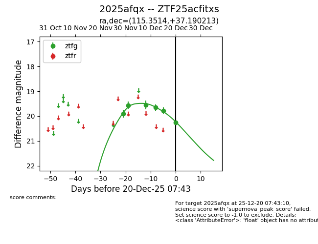
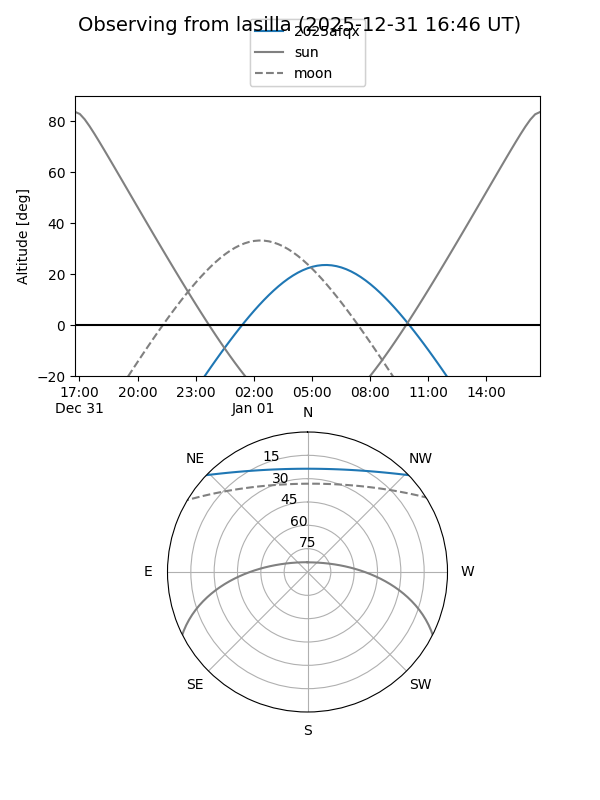
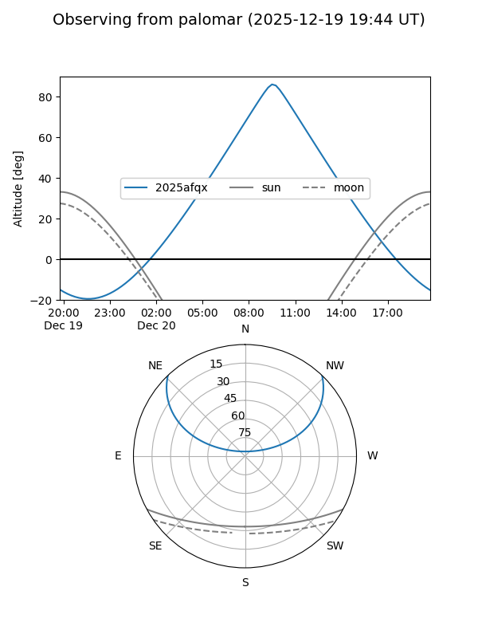
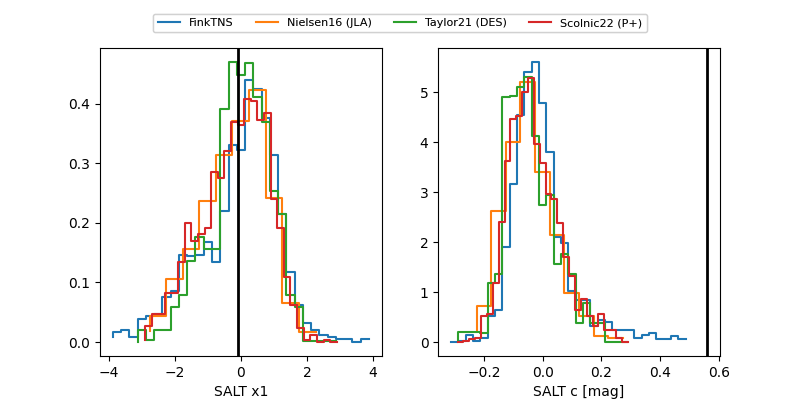

2025afqx
Target 2025afqx at 2025-12-22 14:03
Aliases and brokers:
FINK: fink-portal.org/ZTF25acfitxs
Lasair: lasair-ztf.lsst.ac.uk/objects/ZTF25acfitxs
ALeRCE: alerce.online/object/ZTF25acfitxs
TNS: wis-tns.org/object/2025afqx
YSE: ziggy.ucolick.org/yse/transient_detail/2025afqx
alt names
ZTF25acfitxs (ztf,fink_ztf)
2025afqx (tns,yse)
Coordinates:
equatorial (ra, dec) = 115.3514,+37.19021
equatorial (HMS+DMS) = 07:41:24.33,+37:11:24.77
galactic (l, b) = (182.3637,+25.40296)
Flags:
Photometry:
last ztfg=20.25
6 ztfg detections
Lightcurve

Visibility


Additional plots
